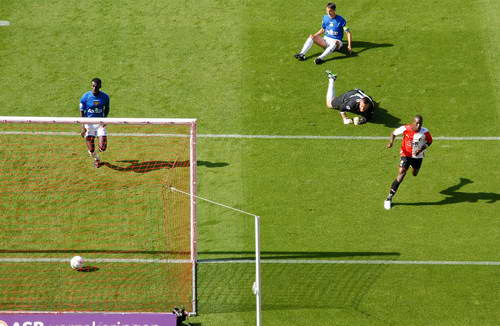
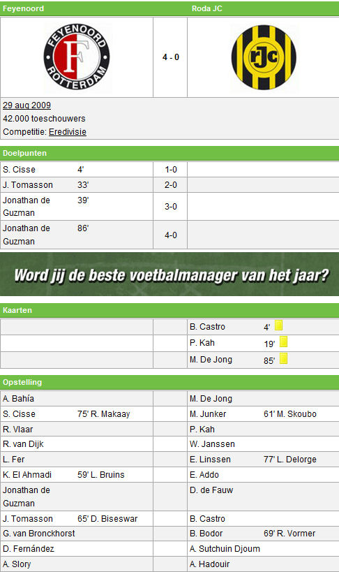

Na de uitwedstrijd tegen Heracles zaten zondag de routiniers Roy Makaay,
Kevin
Hofland en Tim de Cler ook in eigen stadion op de bank. Denny Landzaat was
zelfs
naar de tribune verbannen. Daar had de oud-international een riant uitzicht
op het
beweeglijke spel van zijn teamgenoten. De verdediging van de Limburgers, tot
zondag
ook nog ongeslagen, werd tureluurs gedraaid. Bij de rust was het verschil al
gemaakt, 3-0.
De openingszet kwam van een oude bekende voor Roda JC, Sekou Cissé. Hij
gebruikte zijn sterkste wapens, fysieke kracht en snelheid. Verdediger Davy
de Fauw
had beter moeten weten, de afgelopen seizoenen waren zij teamgenoten. Ook
doelman
Bram Castro werd omspeeld, met een technisch hoogstandje.

Daarna was het de beurt aan Jonathan de Guzman die zijn honderdste duel in
het
rood en wit speelde. Fit na een langdurige blessure, hoopt de geboren
Canadees
nog deze maand na tien Rotterdamse jaren een nieuwe werkgever te vinden.
Feyenoord zal gezien zijn aflopende contract meewerken aan een vertrek,
extra financile
armslag blijft welkom. De Guzman legde de bal bij de tweede treffer
nauwkeurig op de
kruin van Jon-Dahl Tomasson en schoot even later zelf van grote afstand
raak. Kort
voor tijd maakte hij ook de 4-0.
Feyenoord werkte in de snikhete Kuip aan een imposant doelsaldo, dat nu
zeven
doelpunten voor en nog nul tegen bedraagt. Voorin is de trend gezet, de vele
positiewisselingen van aanvallers en middenvelders ogen verfrissend.
Verdedigend
worden de contouren van het sterk verjongde elftal ook zichtbaar, hoewel
doelman
Rob van Dijk met zijn 40 jaar bij enkele plaagstootjes van Roda JC (twee
keer
De Fauw) nog wel eens in actie diende te komen. In het eerste kwartier na de
rust
verprutsten de bezoekers uit Kerkrade vier opgelegde kansen. De grootste
schlemiel
was Mads Junker, die niet had mgen missen.
Na enkele berispingen door het legioen, zette Feyenoord het vizier weer in
voorwaartse richting. Ron Vlaar kopte de bal tegen de paal. De 4-0, weer een
prachtige krul van De Guzman, was een terechte beloning voor het spel van de
thuisclub die volgende week de topper tegen FC Twente wacht. In het laatste
kwartier kwam Makaay nog in het veld, hij werd met respect ontvangen door de
44.000 fans.
